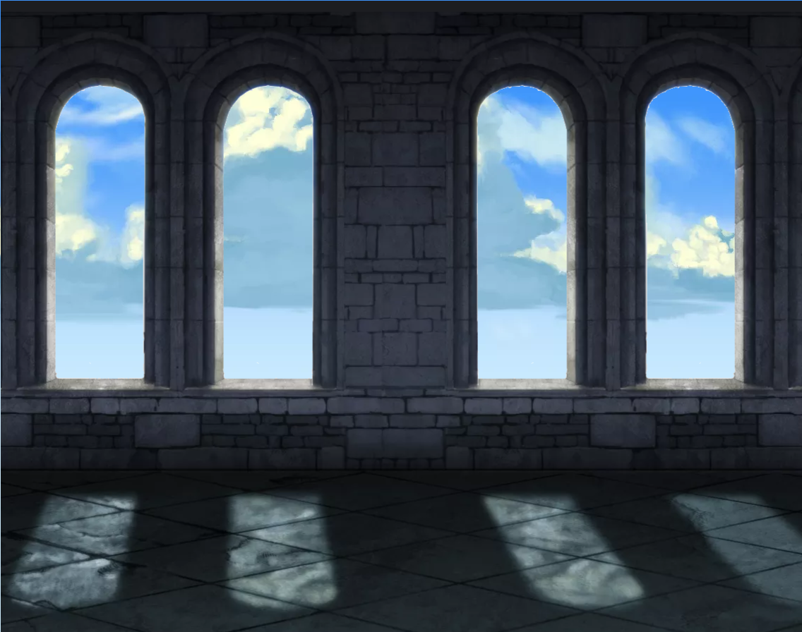
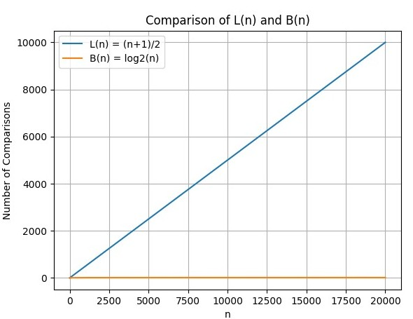
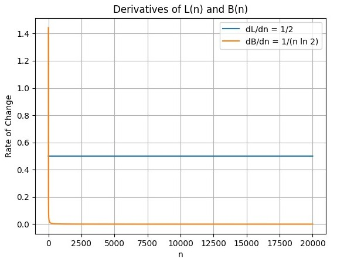
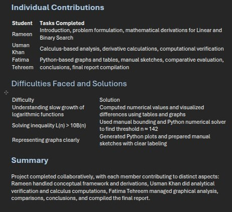
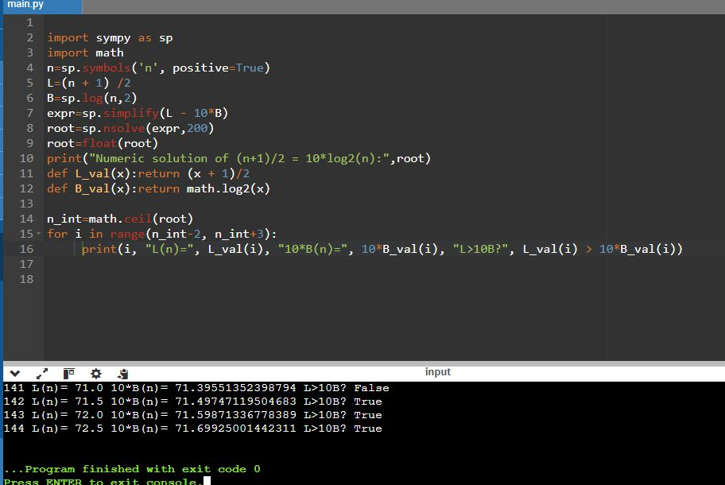

Foundations
C++ foundations, Programming Fundamentals, clean logic, file handling, and problem breakdown.
Flight Log // 001
Developer's Flight Journey
Computer Science / C++ / Python / SFML
A curated record of programming fundamentals, mathematical thinking, game systems, data analysis, and the academic work that shaped my craft.
Built as a living archive: every section connects coursework, code, mathematical reasoning, and the decisions behind each project.
Portfolio Ledger
const archive = {
student: "Muhammad Usman",
discipline: "Computer Science",
craft: ["C++", "SFML", "Python", "Analysis"],
chapter: "Foundations"
};C++ foundations, Programming Fundamentals, clean logic, file handling, and problem breakdown.
SFML game systems, sprites, texture loading, player movement, collision, enemies, and boss behavior.
Python-backed calculus, discrete structures, graph analysis, datasets, and report-driven case studies.
Technical Skills
Organized by the way I use them across projects, assignments, reports, algorithm analysis, game development, and data-driven graph work.
Used for Programming Fundamentals, QuizMaster, Tumble Pop, arrays, functions, file handling, pointers, and dynamic memory.
Used in Tumble Pop for rendering, sprites, textures, audio, keyboard input, collision systems, and arcade-style gameplay.
Used for calculus verification, symbolic/graph outputs, PBS CPI data cleaning, NetworkX graphs, and data analysis.
Strong foundation through PF projects: functions, arrays, pointers, file handling, modular code, and dynamic memory.
Used for mathematical verification, data cleaning, plotting, graph analysis, and project result generation.
Used to build this responsive portfolio with animated sections, interactive tabs, case studies, and contact form behavior.
Interactive UI behavior, DOM updates, events, and browser-based logic.
Responsive layouts, warm editorial interfaces, hover states, animations, and reusable visual systems.
Applied C++ graphics/audio concepts for sprites, textures, windows, keyboard controls, music, and game rendering.
Completed PF through assignments and projects covering logic building, loops, arrays, functions, files, input validation, and modular code.
Arrays, stacks, queues, dynamic storage, records, and practical data modeling across quiz, game, and analysis projects.
Sorting, searching, recursion, complexity thinking, and step-by-step optimization.
Classes, objects, encapsulation, inheritance, and maintainable code organization.
Reading and writing records, logs, question banks, datasets, and structured project output files.
Using calculus and discrete structures to convert real problems into functions, graphs, thresholds, and measurable results.
Version control basics, clear commits, branches, and project history tracking.
Efficient coding workflow with extensions, formatting, terminal use, and debugging.
Professional C++ development environment used for project coding, debugging, build checks, and structured source work.
Linux workflow for compiling, terminal commands, package-based setup, and running C++/SFML style projects.
Inspecting layout, testing responsive views, debugging JavaScript, and checking performance.
Practical work with pandas, NumPy, NetworkX, Matplotlib, and symbolic/plotting workflows for analysis projects.
Academic Work
This section highlights selected Programming Fundamentals assignments that strengthened my command of C++ syntax, structured logic, debugging discipline, and the ability to explain my solutions clearly during evaluation.
This assignment combined terminal-based interaction, blueprint-driven layout, image data interpretation, and recorded demonstrations. It shows how I moved beyond basic console output into a more interactive system where input handling, screen rendering, and game-style logic had to work together reliably.
This assignment built the base of my programming workflow. I practiced translating problem statements into clear C++ logic, using input/output, arithmetic expressions, flowcharts, and careful step-by-step reasoning before writing code.
This assignment strengthened my ability to handle conditional logic and operator-based problem solving. I worked with decision structures, arithmetic operations, branching cases, and bitwise concepts while keeping the code structured and testable.
Across these submissions, I developed habits that matter in real development: clean formatting, consistent testing, readable naming, organized files, and the confidence to explain how each solution works during demos and reviews.
Discrete Structures
Discrete Structures strengthened the way I reason about programs, data, relationships, algorithms, and real-world systems. It trained me to think in terms of proofs, structures, constraints, and measurable connections.
I learned to express statements precisely using predicates, quantifiers, logical connectives, and valid argument forms.
Direct proof, contradiction, contrapositive reasoning, and counterexamples improved how I justify technical decisions.
Sets, functions, relations, equivalence, and mappings helped me understand how data can be grouped, transformed, and compared.
Counting, arrangements, combinations, and brute-force reasoning developed my ability to evaluate possibilities systematically.
Mathematical induction and correctness reasoning helped me connect recursive thinking with reliable algorithm design.
Graph theory gave me a language for networks, paths, connectivity, centrality, and relationships inside complex systems.
Thinking Impact
The course changed my approach from only writing code to first modeling the problem: What are the objects? What relationships connect them? Which rules are fixed? Which metrics prove the result? That mindset helped directly in the PBS price co-movement project, where consumer items became graph nodes and price relationships became measurable edges.
View Course OutlineCalculus and Analytical Geometry
Calculus strengthened my ability to model real problems as functions, study how quantities change, optimize decisions, approximate results, and connect mathematical reasoning with Python-based verification.
I practiced turning word problems into functions with clear variables, domains, constraints, and real-world meaning.
Limits and continuity improved how I reason about behavior near critical points, boundaries, and undefined cases.
Derivatives helped me analyze velocity, marginal cost, growth rate, sensitivity, and how fast systems change.
I learned to identify extreme values, compare alternatives, and solve practical minimization and maximization problems.
Integration connected accumulation, area, total change, and applications that require summing continuous behavior.
Sequences, infinite series, and convergence tests improved my understanding of long-term behavior and approximation.
Thinking Impact
Calculus trained me to ask better questions before solving: what is changing, what variable controls the system, where is the threshold, and how does the result scale as input grows? That mindset directly helped in the search algorithm project, where algorithm performance was modeled as mathematical functions.
View Course OutlineStage 06 / Completed Missions
Each mission documents the problem, my implementation decisions, the technical evidence, and what the final result taught me as a computer science student.
A C++ console quiz system built from a Programming Fundamentals brief into a complete learning flow with difficulty levels, timers, records, logs, replay, and review.
Engineering focus: reliable file handling, deterministic quiz state, replayable user flow, and score persistence inside a console-first interface.
A C++/SFML arcade project that turns a large PF game brief into player movement, collision, enemy capture, projectile release, dynamic storage, and boss behavior.
Engineering focus: separating movement, collision, capture, projectile, and boss behaviors into predictable game systems.
A graph-theory analysis of PBS CPI data that modeled consumer items as nodes and price co-movement as weighted edges.
Engineering focus: turning raw economic records into a weighted network that exposes central items and yearly movement patterns.
A calculus and Python study comparing Linear Search and Binary Search using functions, derivatives, thresholds, and graphs.
Engineering focus: using calculus to explain algorithm growth, not just report runtime numbers after execution.
Case Study
I completed QuizMaster as a C++ Programming Fundamentals project by turning the assignment requirements into a complete console quiz system with difficulty levels, randomized questions, timed answers, score records, logs, replay, and wrong-answer review.
> QUIZ CHALLENGE
1. Play Quiz
2. Show Records
3. Add Question
Difficulty: Advanced
Score saved to records.txt
Build a reusable quiz application that could load questions externally, manage difficulty, time answers, save records, and support replay.
I designed the menu, split the quiz into functions, managed arrays for question order, handled files for persistence, and kept the flow understandable for users.
The final system behaved like a complete PF application with input handling, state transitions, score history, quiz logs, and a wrong-answer review loop.
The project required a main menu, question bank, difficulty levels, randomized order, score calculation, timer checks, high scores, logs, replay, and review of wrong answers.
I used `beginGame()` for the quiz flow, `showRecords()` for the leaderboard, and `addExtraQuestion()` for the bonus feature so each part had a clear responsibility.
The final project loads questions from files, shuffles quiz order, tracks answers, stores records, writes quiz logs, and allows users to add new questions for review.
I started with the core menu and mapped each difficulty to its own file: `level1.txt`, `level2.txt`, and `level3.txt`.
I loaded questions into arrays, shuffled an order array, checked answers, and counted correct and wrong attempts.
I used file handling to save `records.txt`, write `quiz_logs.txt`, and store suggested questions in `extra_questions.txt`.
I stored wrong questions during the quiz so the player could review mistakes before choosing to replay.
Project Spreadsheet
| Phase | Requirement | How I Completed It | File / Concept | Status |
|---|---|---|---|---|
| Phase 1 | Main menu and quiz start | I created a console menu for playing the quiz, viewing records, adding questions, and exiting. | C++ conditionals, functions | Complete |
| Phase 1 | Question bank by difficulty | I separated beginner, intermediate, and advanced questions into external text files. | level1.txt, level2.txt, level3.txt | Complete |
| Phase 2 | Randomized quiz order | I used an order array and shuffled indexes so every attempt could show a different sequence. | srand(), rand(), arrays | Complete |
| Phase 2 | Timed questions and scoring | I measured answer time with `time(0)` and `difftime()` and counted timed-out answers as wrong. | ctime, score logic | Complete |
| Phase 3 | High scores and logs | I saved scores in `records.txt`, sorted the top records, and wrote session activity into `quiz_logs.txt`. | ifstream, ofstream, bubble sort | Complete |
| Bonus | Add new questions | I added a feature that stores user-submitted questions in `extra_questions.txt` with difficulty labels. | File append, input handling | Complete |
I kept gameplay, records, and question addition in separate functions to make the program easier to explain.
I used external files for question banks, records, logs, and submitted questions.
I added timer feedback, replay, score summary, leaderboard, and wrong-answer review.
Deeper Analysis
The important part of this project was not only displaying questions. I had to design a repeatable quiz flow where file input, randomized selection, time limits, scoring, records, and review all worked together without breaking the user journey.
Most Important Summary
I built QuizMaster as a complete C++ console application, not a small quiz script. I handled the menu system, difficulty-based question files, randomized order, timing, scoring, wrong-answer review, high-score storage, quiz logs, and question submission. This project proved that I can turn a Programming Fundamentals brief into a structured, testable, file-driven application with clear user flow.
Case Study
I completed Tumble Pop as a Programming Fundamentals game project by breaking a large arcade-style brief into smaller systems: player control, collision, level rendering, enemy capture, projectile release, dynamic memory, and the final boss sequence.
Transform a multi-phase arcade game statement into a playable C++/SFML build with movement, collisions, capture mechanics, dynamic enemies, and a boss encounter.
I worked system by system: first the SFML window and level, then player physics, then capture and release mechanics, then dynamic storage and boss behavior.
The project became manageable because each feature had a testable responsibility before it was integrated with the rest of the game loop.
The assignment required more than a simple platformer. I had to support two player styles, four-direction movement in Phase 1, 360-degree vacuum aiming in Phase 2, enemy capture and release, dynamic enemy producers, cloud behavior, and an octopus boss.
I started from the SFML skeleton, verified the window, level grid, gravity, textures, and music first, then added mechanics one by one. This helped me test each feature before combining it with the next system.
The final build became easier to manage because every major feature had a clear role: rendering handled the world, collision handled movement, capture storage handled enemies, and boss logic handled the final challenge.



How I Worked Efficiently
Instead of trying to code the whole game at once, I separated the project into testable milestones. I first made sure the player, level grid, gravity, and collisions worked. After that, I implemented enemy behavior, vacuum capture, release logic, and dynamic resizing. The boss level was added last because it depended on all previous systems.
Project Spreadsheet
| Phase | Requirement | How I Completed It | Tech / Concept | Status |
|---|---|---|---|---|
| Phase 1 | Level, player, gravity, and collisions | I used the provided SFML skeleton, grid-based tiles, collision points, and gravity checks. | SFML, arrays, collision logic | Complete |
| Phase 1 | Vacuum capture and enemy release | I treated captured enemies like a stack so the last captured enemy could be released first. | LIFO logic, keyboard input | Complete |
| Phase 2 | 360-degree aiming for Yellow Tumblepopper | I connected direction control to projectile movement so enemies could release by angle. | Trigonometry, vectors | Complete |
| Phase 2 | Dynamic enemy storage | I resized the captured-enemy structure only when needed so memory matched the current count. | Dynamic memory, pointers | Complete |
| Boss | Octopus boss, minions, and tentacles | I reused capture and resize logic for boss minions and tentacle behavior to keep the design consistent. | Runtime spawning, game states | Complete |
I completed the core mechanics before polishing visuals, which kept debugging simple.
I used dynamic allocation carefully for captured enemies and boss-related objects.
I tested movement, suction, release, enemies, and boss behavior as separate milestones.
Deeper Analysis
The project had many moving parts, so I treated the game like a set of connected systems. Movement, collision, capture, release, enemy storage, and boss behavior were built as milestones, then integrated after each piece was testable.
Most Important Summary
I completed Tumble Pop by converting a large SFML game brief into manageable C++ systems. I implemented player control, tile collisions, gravity, sprite rendering, enemy capture, projectile release, dynamic enemy storage, and boss-level behavior. The most important achievement was that I learned how to manage a large project through milestones instead of writing everything at once.
Case Study
This MT-1003 project connected calculus with computer science by modeling search algorithms as mathematical functions. The project compared expected comparisons, growth rates, derivatives, threshold behavior, and Python-generated visualizations.
L(n) = (n + 1) / 2
B(n) = log2(n)
Use calculus to explain why two search strategies behave differently as input size grows, then verify the reasoning with Python-generated evidence.
I helped model expected comparisons as functions, compare growth rates through derivatives, interpret thresholds, and convert the results into visual graphs.
The final report connected programming and mathematics in a way that made Binary Search efficiency understandable, measurable, and presentation-ready.
The project studied why Linear Search becomes inefficient for large inputs while Binary Search scales better when data is sorted.
We derived L(n) and B(n), computed derivatives to compare growth rates, solved a threshold inequality, and verified the results using Python.
The graphs and tables showed that Linear Search grows steadily with input size, while Binary Search grows slowly because every step halves the search space.


What We Made
The project included manual derivations, Python symbolic expressions, graph plotting, derivative comparison, threshold analysis, and a table of comparison values for different input sizes. It turned an algorithmic topic into a calculus model that could be reasoned about visually and mathematically.
Analysis Tracker
| Stage | What Was Done | Calculus Concept | Professional Outcome |
|---|---|---|---|
| Modeling | Defined expected comparisons as L(n) = (n + 1) / 2 and B(n) = log2(n). | Functions and growth | Converted algorithm behavior into clear mathematical expressions. |
| Derivatives | Compared d/dn L(n) and d/dn B(n) to understand rate of change. | Differentiation | Showed that Linear Search grows faster as input size increases. |
| Threshold | Solved where Linear Search becomes significantly slower than Binary Search. | Inequalities and approximation | Identified the point where Binary Search becomes clearly more efficient. |
| Visualization | Plotted functions and derivatives using Python to verify the manual work. | Graph interpretation | Made the performance gap easy to understand and present. |
Connecting abstract calculus formulas with algorithm behavior in a way that was mathematically correct and easy to explain.
We separated the project into derivation, Python verification, visualization, and interpretation so each result could be checked twice.
The project clarified how calculus can explain computational efficiency, not just physical motion or geometry.


Deeper Analysis
The core result was that calculus made algorithm behavior measurable. Linear Search increases almost directly with input size, while Binary Search grows slowly because each comparison removes half of the remaining search space.
Most Important Summary
I helped turn Linear Search and Binary Search into mathematical models, compared their growth using functions and derivatives, interpreted the threshold where Binary Search becomes clearly better, and supported the work with Python graphs. This project shows that I can connect programming with mathematical reasoning and explain algorithm efficiency in a visual, evidence-based way.
Case Study
We built a reproducible Discrete Structures project that uses Pakistan Bureau of Statistics CPI data to model consumer items as graph nodes. Two items are connected when their monthly price-change patterns move similarly across a sufficient number of cities.
Turn PBS price statistics into a graph model that reveals which consumer items move together across cities and fiscal years.
I focused on graph interpretation, centrality findings, year-to-year comparison, persistent item pairs, and presenting the analysis in a professional format.
The case study shows how discrete structures can explain a real dataset through nodes, edges, similarity thresholds, centrality, and temporal change.
The project asked us to analyze CPI item prices across cities and years, then identify which consumer items show similar price increase/decrease patterns.
Each item became a node. We computed monthly price-change vectors, compared item pairs using cosine similarity, and added an edge when at least K cities crossed the similarity threshold.
My contribution focused on interpreting category connectivity, sensitivity analysis, network graphs, centrality charts, temporal comparisons, and final result explanation.
Loaded the PBS dataset, standardized fields, handled missing prices, and prepared a continuous item-city time series.
Converted monthly prices into price-change vectors using month-to-month differences instead of raw prices.
Computed cosine similarity for each item pair in each city to measure whether prices moved in the same direction.
Created yearly weighted graphs using TAU = 0.6 and K = 3, then analyzed centrality and temporal changes.
Results Spreadsheet
| Year | Edges | Density | Average Degree | Interpretation |
|---|---|---|---|---|
| 2023-24 | 232 | 0.1151 | 7.25 | Peak inflation synchronized many categories, producing the densest graph. |
| 2024-25 | 87 | 0.0432 | 2.72 | Price movement became more independent, causing a 62% edge drop. |
| 2025-26 | 105 | 0.0521 | 3.28 | The network partially recovered with more selective co-movement patterns. |
Outcome
The analysis showed that inflation can synchronize unrelated categories. Ten commodity pairs stayed connected across all three years, including Petrol/Diesel, Milk/Curd, Sugar/Gur, oil pairs, pulse substitutes, and meat substitutes. Around 69-75% of edges crossed category boundaries, showing that price shocks spread systemically across the consumer basket.
Raw PBS data had missing values and inconsistent reporting across item-city-month combinations.
We cleaned prices, filled gaps carefully, used price differences, and excluded zero-norm vectors from similarity calculations.
We used degree, closeness, and betweenness centrality to identify hubs, bridges, and structurally important items.
Deeper Analysis
The graph analysis showed that price movement is not isolated by product category. Some items repeatedly moved together across cities and years, which made centrality, density, and persistent edges important for interpreting inflation behavior.
Most Important Summary
I contributed to a full graph-theory analysis of PBS CPI item prices by helping interpret item relationships, network density, persistent commodity pairs, centrality results, and temporal changes. The project demonstrates my ability to use Discrete Structures beyond theory: I applied graphs, similarity, and centrality to explain real economic data in a professional case-study format.
Flight Log
Every milestone added a new system, challenge, and direction to my journey as a computer science student.
This section will become the detailed semester-by-semester journey. For Phase 2, it acts as the waypoint where the aircraft shifts into a wider, calmer tracking path before the final approach.
Contact Me
I am based in Islamabad, Pakistan, and currently studying at the National University of Computer and Emerging Sciences.
Islamabad, Pakistan
National University of Computer and Emerging Sciences (NUCES)